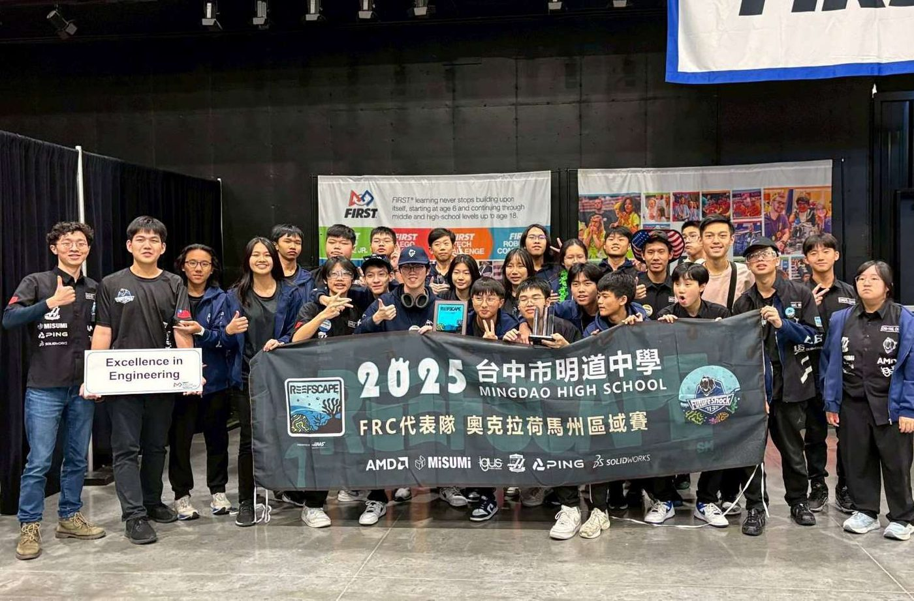
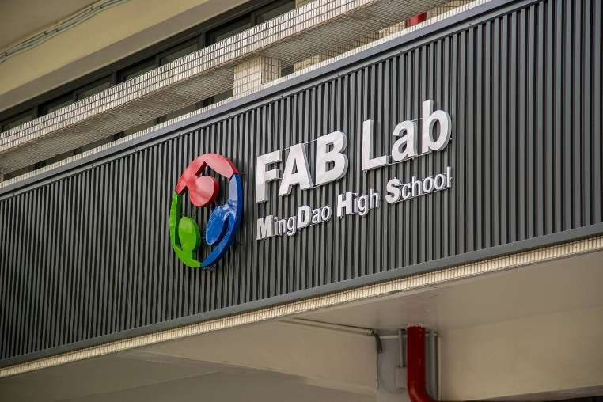
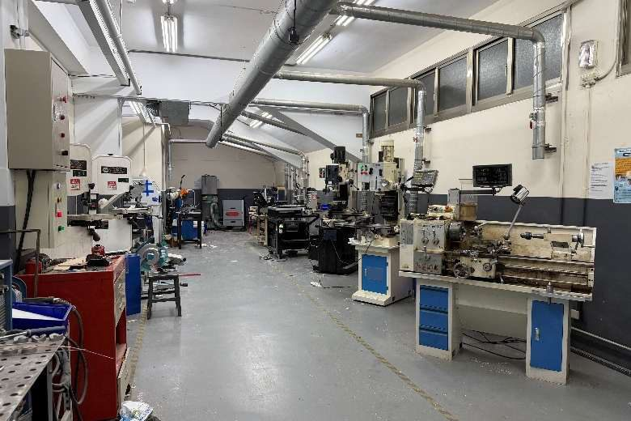

At FRC Team 7130 Future Shock, we began with a simple question: when students face their future, are they ready to understand it? Many rely on fragmented inputs — grades, textbooks, limited exposure — leading to what we call Future Shock: not fear, but the realization that they are unprepared to interpret the world. We respond by expanding vision beyond classrooms, building an ecosystem that connects students with real-world contexts and perspectives, empowering them to navigate and shape their future. FRC 7130 Future Shock 源自一個簡單的問題：當學生面對未來時，他們真的準備好理解它了嗎？許多學生依賴零碎的資訊——成績、課本、有限的見聞——因而產生我們所說的「未來衝擊」：那不是恐懼，而是發現自己尚未準備好解讀這個世界。我們的回應，是把視野拓展到教室之外，打造一個讓學生連結真實世界脈絡與觀點的生態系，使他們有能力掌握並塑造自己的未來。
"Up to the future" means proactively preparing for what comes next — not passively walking toward it. 「邁向未來」不是被動地走向下一步，而是主動為未來做好準備。
Knowledge bases, training programs, and the Sustainability Loop of Vision — alumni return as coaches so expertise compounds instead of graduating away. 知識庫、培訓制度與「視野永續循環」——校友回任教練，讓專業隨世代累積，而非隨畢業流失。
From rural STEM camps to founding new FRC teams, our impact extends to the whole community. 從偏鄉 STEM 營隊到協助創立新 FRC 隊伍，我們的影響力遍及整個社群。
Our structure balances efficiency, specialization, and sustainability. We operate through three pillars, supported by mentors and alumni as guiding contributors: 我們的架構兼顧效率、專業分工與永續經營，由三大支柱組成，並由導師與校友從旁指導：
Clear roles that prevent workload concentration and keep the team running season after season. 明確的職務分工避免工作過度集中，讓隊伍能一季又一季穩定運作。
A dual Education + Research system: one side focuses on internal training and knowledge transfer, the other drives technical advancement. Sub-teams include Design, Mechanism, Electrical, and Programming. 「教育＋研究」雙軌制：一軌專注於內部培訓與知識傳承，另一軌推動技術突破。子團隊包含設計、機構、電路與程式。
Extends impact by organizing initiatives and building industry and academic connections — outreach, documentation, finance, photography, and public relations. 透過策劃活動、連結產業與學界來擴大影響力——涵蓋公關推廣、文書、財務與影像紀錄。



Male 80% · Female 20% — and growing more diverse: through our Future Help program we helped establish two all-female FRC teams (10390 & 11313) in Taichung. 男 80%、女 20%——而且持續走向多元：透過 Future Help 計畫，我們協助在台中創立了兩支全女子 FRC 隊伍（10390 與 11313）。
The team was founded in 2017–18 by Head Mentor Sidney Huang, a Mingdao alumnus and mechanical engineer who helped establish the school's FABLAB — inspired by a seminar with Dr. Jeng Yen, a NASA engineer and FRC mentor. Today, seven alumni coaches return each season to lead technical training, drawing directly from their university coursework. Our Future Alumni program turns this goodwill into structure: a standing network through which graduates contribute knowledge, industry connections, and mentorship back to the team. 本隊由總導師 Sidney Huang 於 2017–18 年創立。他是明道校友、機械工程師，曾協助學校建立 FABLAB；在一場與 NASA 工程師、同時也是 FRC 導師的 Dr. Jeng Yen 的座談後，開啟了我們的 FRC 之路。如今每個賽季有七位校友教練回隊帶領技術培訓，將大學所學直接傳承給學弟妹。Future Alumni 計畫更將這份善意制度化：建立常態網絡，讓畢業生持續回饋知識、產業人脈與指導。
"Graduation does not mark the end of your responsibility; rather, it is the beginning of a legacy." — Sidney Huang, Head Mentor 「畢業不是責任的結束，而是傳承的開始。」——總導師 Sidney Huang